Guideline gán nhãn GreenSM (taxi điện Xanh SM) · v1.1
| Mục tiêu | Mọi xe GreenSM trong ảnh đều có một hộp ôm sát phần nhìn thấy, không có hộp nào trên xe khác. Ba người gán cùng một ảnh phải ra cùng một kết quả. |
| Dữ liệu | Khung hình cắt từ video nhóm tự quay (cạnh dài 1280 px), quay ngang tầm mắt trên đường phố đô thị Việt Nam |
| Công cụ | CVAT · một label duy nhất GreenSM · shape Rectangle · export YOLO 1.1 |
| Lớp | Chỉ 1 lớp: 0 = GreenSM. Không tạo lớp khác. |
| Nguyên tắc vàng | ① Không sót xe GreenSM nào ② Hộp sát từng pixel ③ Không chắc thì loại cả ảnh, không đoán |
| Phiên bản | v1.1 · 04/10/2026 · người giữ guideline: Trịnh Nam Trung · trạng thái: chờ nhóm duyệt |
Mọi nhãn do máy gán nháp bắt buộc phải có người mở ra xem và sửa (luật cuộc thi, slide 7). Không có ngoại lệ kiểu "máy tự tin thì bỏ qua".
1. Bốn điều cần biết trước khi gán
- Điểm chấm thưởng hộp ôm sát. Điểm là mAP@[.5:.95]: mỗi hộp bị chấm ở 10 mức trùng khớp (IoU) từ 0,50 đến 0,95. Hộp rộng thừa khoảng 10% mỗi phía chỉ đạt 4/10 mức (xem mục 4).
- Sót một xe GreenSM còn tệ hơn bỏ cả ảnh đó. Model sẽ học rằng "chiếc xe này là nền". Luôn quét toàn ảnh trước khi sang ảnh tiếp theo.
- Không chắc thì loại cả ảnh. Gặp xe không chắc có phải GreenSM không thì đừng đoán. Ghi ảnh đó vào log với
excludevà lý do (mục 9). Mất một ảnh rẻ hơn nhiều so với dạy model sai. - Nhãn nháp của máy thường sai theo vài kiểu quen thuộc (mục 7). Việc của bạn là sửa, không phải bấm chấp nhận.
2. GreenSM là gì
GreenSM = ô tô taxi Xanh SM sơn màu XANH NGỌC đặc trưng. Xe thường phối thêm bạc hoặc xám ở nóc và thân dưới, có chữ "Xanh SM" và logo VinFast.
Các dấu hiệu nhận biết, xếp theo độ tin cậy:
| Dấu hiệu | Độ tin | Ghi chú |
|---|---|---|
| Thân xanh ngọc sáng (giữa xanh lá và xanh dương) | ★★★ | Dấu hiệu chính. Nhìn được cả ở xe rất xa |
| Chữ "Xanh SM" và logo trên cửa hoặc đầu xe | ★★★ | Chỉ đọc được khi xe ở gần |
| Phối bạc/xám ở nóc hoặc dải thân dưới | ★★ | Có ở hầu hết xe |
| Dáng VinFast (VF e34, VF 5, VF 8, Limo Green…) | ★ | Xe cá nhân VinFast cùng dáng nhưng khác màu thì không gán |
| Biển số vàng | ✗ | Không dùng. Xe kinh doanh vận tải nào cũng biển vàng |
Xe ở xa, không đọc được chữ: chỉ cần thân đúng màu xanh ngọc và nhìn ra khối ô tô khi zoom là đủ để gán. Không bắt buộc thấy logo.
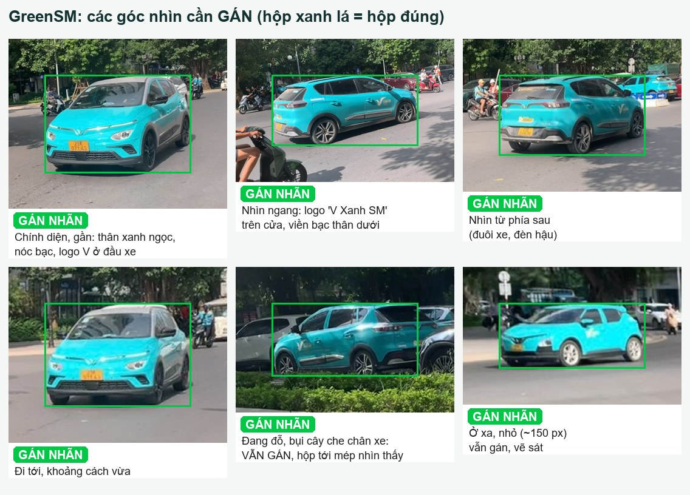
2.1. Dễ nhầm nhưng KHÔNG phải GreenSM
Không vẽ gì lên những xe có viền đỏ nét đứt dưới đây. Ảnh chỉ có những xe này thì vẫn giữ lại làm ảnh nền (file nhãn rỗng). Ảnh nền rất có ích vì nó dạy model "đừng báo nhầm".
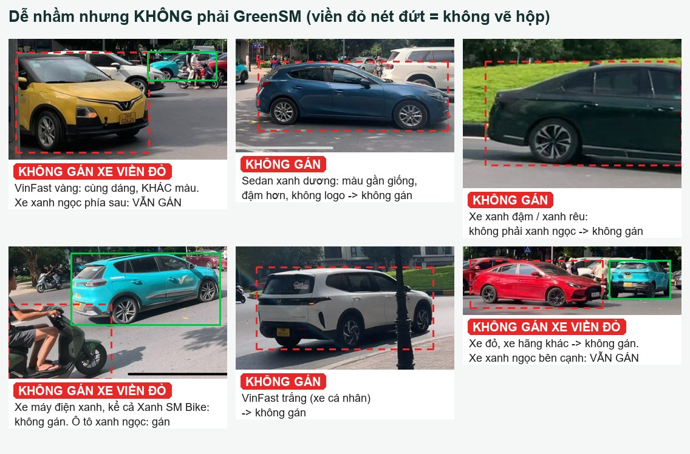
⚠️ Xe dễ nhầm và xe GreenSM thường đứng ngay cạnh nhau, như 3 hình có hộp xanh ở trên. Bỏ qua xe dễ nhầm, nhưng xe GreenSM bên cạnh vẫn phải gán.
Ngoài ra cũng không gán:
- xe buýt (kể cả VinBus màu xanh);
- xe tải, xe máy, xe đạp, người mặc áo xanh Xanh SM;
- xe in trên poster, biển quảng cáo, màn hình;
- hình phản chiếu trên kính hoặc vũng nước.
2.2. Vùng xám: xe Xanh SM màu bạc
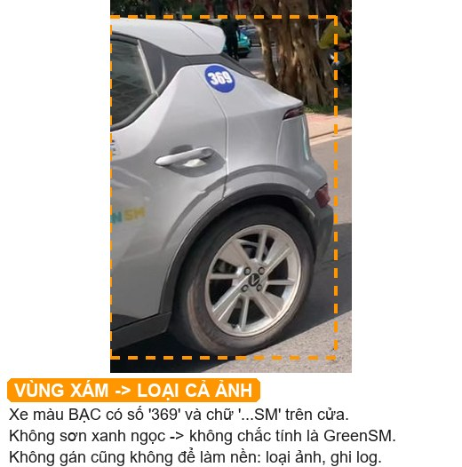
Xe màu bạc/trắng có chữ "SM" hoặc số hiệu trên cửa (như SMP004) không sơn xanh ngọc, nên chưa rõ có được tính là GreenSM hay không. Quy tắc:
- Loại cả ảnh: ghi
excludevới lý doxe bac SMvào log. - Không gán xe đó, và cũng không giữ ảnh làm ảnh nền. Nếu giữ làm nền, model sẽ học rằng xe đó chắc chắn không phải GreenSM.
3. Cây quyết định
flowchart TD
A["Thấy một chiếc xe trong ảnh"] --> B{"Ô tô 4 bánh?"}
B -- "Không: xe máy, xe đạp, người" --> N1["KHÔNG gán"]
B -- "Có" --> C{"Thân sơn XANH NGỌC kiểu Xanh SM?"}
C -- "Không: vàng, trắng, đỏ, xanh dương, xanh rêu" --> N2["KHÔNG gán, ảnh vẫn giữ làm nền"]
C -- "Bạc hoặc trắng nhưng có chữ SM" --> X["VÙNG XÁM: loại cả ảnh, ghi exclude"]
C -- "Có" --> D{"Zoom 300-400%: thấy rõ thân xanh ngọc và khối ô tô?"}
D -- "Không chắc" --> X
D -- "Chắc" --> E{"Xe thật trên đường? Không phải poster hay phản chiếu"}
E -- "Poster hoặc phản chiếu" --> N3["KHÔNG gán"]
E -- "Xe thật" --> F["Vẽ 1 hộp ôm sát PHẦN NHÌN THẤY, tính cả gương và lốp"]
4. Vẽ hộp thế nào cho đúng
| # | Quy tắc |
|---|---|
| R1 | Bốn mép hộp chạm đúng pixel ngoài cùng nhìn thấy của xe: mũi xe, đuôi xe, điểm cao nhất của nóc, điểm thấp nhất của lốp chạm đất. |
| R2 | Tính cả gương chiếu hậu, ăng-ten ngắn, đèn trên nóc, cửa xe đang mở. Không tính bóng xe trên mặt đường, vệt đèn chiếu xuống đường. |
| R3 | Bị che thì chỉ ôm phần nhìn thấy. Không ước lượng phần bị che. Vật che nằm giữa xe (người, cột) thì hộp vẫn kéo từ pixel nhìn thấy trái nhất tới phải nhất của xe. |
| R4 | Bị cắt ở mép ảnh thì hộp dừng ở mép ảnh. |
| R5 | Mỗi xe đúng một hộp. Hai xe đứng sát nhau thì vẽ hai hộp riêng. Hai hộp được phép chồng lên nhau. |
| R6 | Xe nhoè do chạy nhanh vẫn gán, hộp ôm vùng nhoè của thân xe. |
| R7 | Ảnh có viền đen (pillarbox): chỉ gán trong vùng ảnh thật. |
| R8 | Xe nhỏ: phóng to 300–400% rồi mới chỉnh mép. |
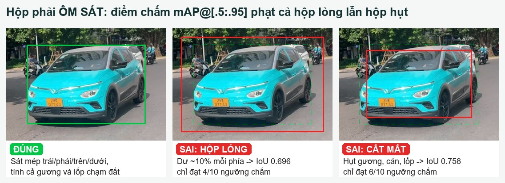
Vì sao phải khắt khe với xe nhỏ? Cùng lệch 3 pixel, xe 26 px mất gần một nửa số ngưỡng chấm, còn xe 300 px gần như không sao:
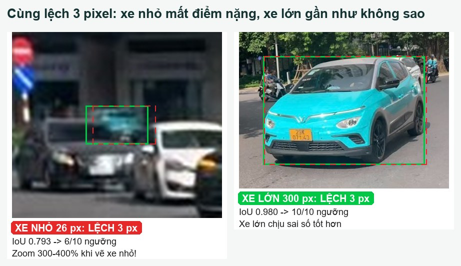
💡 IoU là gì? IoU = diện tích phần hai hộp chồng lên nhau chia cho diện tích hai hộp gộp lại. Hai hộp trùng khít thì IoU = 1. Ở ngưỡng t, hộp được tính là "trúng" nếu IoU ≥ t. Cuộc thi chấm ở 10 ngưỡng 0,50 · 0,55 · … · 0,95. Ví dụ hộp lỏng ở trên có IoU 0,696, nên chỉ trúng 4 ngưỡng (0,50 đến 0,65); chỉ cần sát thêm một chút lên 0,70 là được 5.
Hộp mẫu của BTC ôm từ mũi đến đuôi, từ nóc xuống chân bánh, kể cả khi xe bị nhoè:
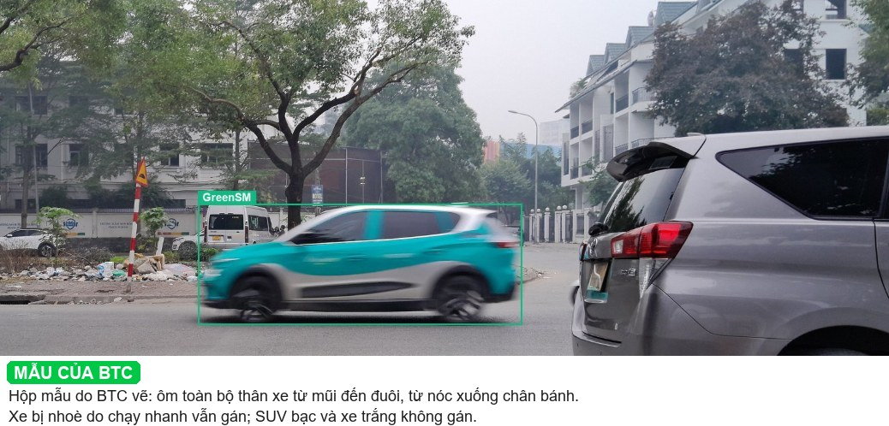
5. Tình huống đặc biệt
5.1. Xe nhỏ ở xa: vẫn gán, kể cả khi tí hon
Không có ngưỡng "nhỏ quá thì bỏ qua". Nhận ra được là GreenSM (màu xanh ngọc và khối xe khi zoom) thì gán. Không nhận ra được thì loại ảnh.
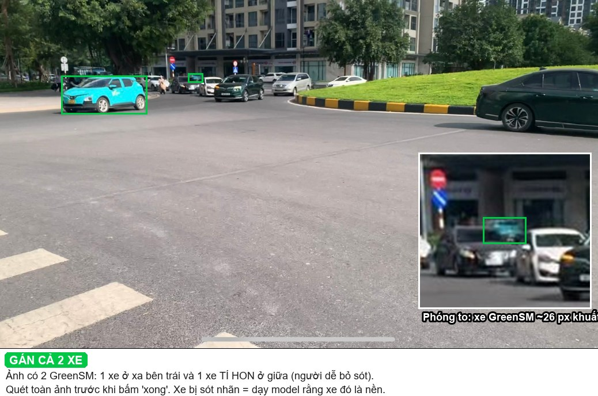
5.2. Bị che một phần: vẫn gán
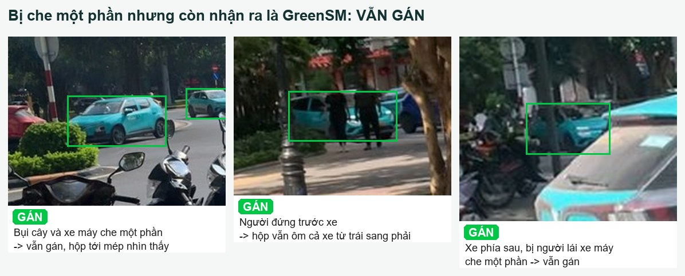
5.3. Hai xe sát nhau hoặc che nhau: mỗi xe một hộp
Xe phía sau chỉ lộ nóc và kính thì vẫn gán, hộp ôm đúng phần lộ ra.
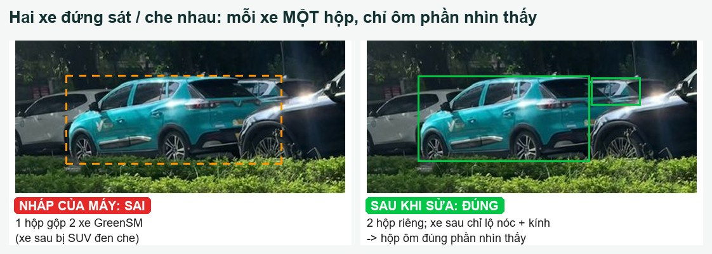
5.4. Nhiều GreenSM trong một ảnh, ảnh có viền đen
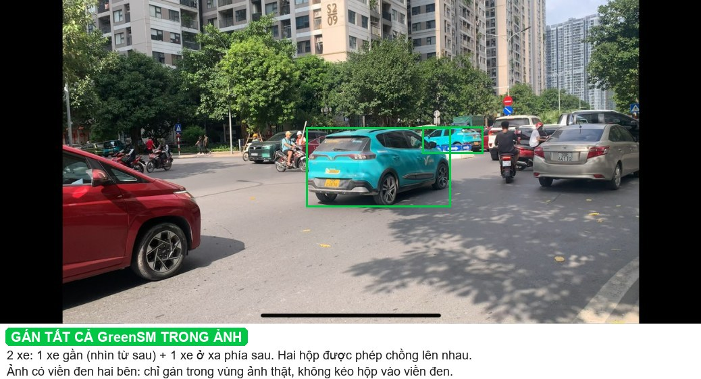
5.5. Các ca khác
| Tình huống | Quyết định |
|---|---|
| Xe đang đỗ ven đường | Gán như xe đang chạy |
| Xe chỉ lộ một mẩu ở mép ảnh | Nhận ra là GreenSM thì gán, hộp dừng ở mép ảnh (R4). Không nhận ra thì loại ảnh |
| Chỉ thấy một mảng nhỏ xanh ngọc giữa ảnh, không thấy khối xe | Loại ảnh (không chắc) |
| Xe trong bóng râm, màu tối hơn | Vẫn gán nếu nhận ra màu xanh ngọc hoặc chữ Xanh SM |
| Khung hình mờ toàn bộ, không phân biệt được xe | Loại ảnh |
| Ảnh có thanh home-indicator iPhone ở đáy | Bình thường, gán như mọi ảnh |
6. Quy trình duyệt trong CVAT
Một ảnh, bốn bước, đúng thứ tự:
- Quét tìm xe bị sót. Zoom lần lượt các vùng: đường chân trời, sau xe máy, sau cây, sau xe khác, vùng tối. Thấy GreenSM chưa có hộp thì vẽ mới. Đây là lỗi đắt nhất.
- Xoá hộp sai: hộp trên xe không phải GreenSM, hộp trùng.
- Chỉnh mép từng hộp theo mục 4. Xe nhỏ phải zoom 300–400%.
- Ảnh cần loại (vùng xám, không chắc): ghi một dòng vào log (mục 9) rồi sang ảnh tiếp. Không cần xoá ảnh khỏi CVAT: công cụ dựng dữ liệu tự bỏ các ảnh có trong log.
Duyệt hết job thì bấm Save, rồi chuyển trạng thái job sang completed để cả nhóm biết job đã xong.
Phím tắt CVAT hay dùng: F ảnh sau · D ảnh trước · N vẽ hộp mới · Del xoá hộp đang chọn · Ctrl+Z hoàn tác · Ctrl+S lưu · lăn chuột để zoom.
❓ Phím tắt có thể khác giữa các phiên bản CVAT. Nếu không chạy, xem lại ở Settings → Shortcuts.
Tốc độ mục tiêu: khoảng 3 ảnh/phút. Nếu một ảnh mất quá 1 phút:
- vì không chắc có phải GreenSM không: loại ảnh;
- vì ảnh có nhiều xe: cứ làm tiếp. Ảnh nhiều xe là ảnh có giá trị nhất.
7. Nhãn nháp của máy hay sai kiểu nào
Đây là các lỗi đã thấy thật khi chạy máy gán nháp lên ảnh mẫu (cam = nháp của máy, xanh = đúng):
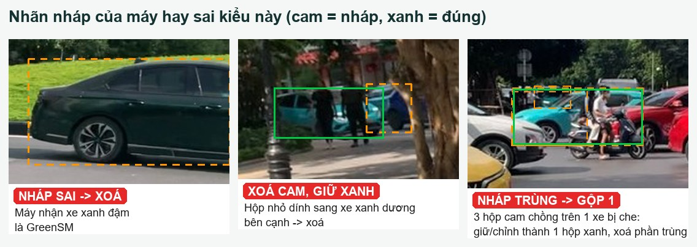
| Lỗi của máy | Cách sửa |
|---|---|
| Nhận xe xanh đậm / xanh rêu là GreenSM | Xoá |
| Gộp 2 xe đứng sát thành 1 hộp (hình ở mục 5.3) | Xoá, vẽ lại 2 hộp |
| Hộp nhỏ dính sang xe bên cạnh | Xoá |
| Nhiều hộp chồng trên một xe bị che | Giữ 1 hộp, chỉnh cho đúng, xoá phần còn lại |
| Bỏ sót xe nhỏ hoặc xe bị che | Vẽ mới (bước 1 ở mục 6) |
| Hộp đúng xe nhưng lỏng hoặc hụt vài pixel | Kéo mép cho sát |
8. Tự kiểm tra và sai số cho phép
Trước khi export, xem lại từng ảnh:
Kiểm cả task:
Sai số cho phép:
| Hạng mục | Mức đạt |
|---|---|
| Mép hộp, xe nhỏ (< 50 px) | Lệch ≤ 1 px |
| Mép hộp, xe lớn | Lệch ≤ 2–3 px |
| Hiệu chuẩn: 3 người vẽ chung 10 ảnh | IoU giữa hai người bất kỳ ≥ 0,85, số hộp khớp nhau |
| Kiểm chéo 15% số ảnh | ≤ 1 xe bị sót trên 20 ảnh |
9. Ghi log và báo vướng mắc
Chỉ ghi log cho ảnh bị loại hoặc ảnh cần hỏi. Ảnh duyệt bình thường không phải ghi gì. Số hộp đã thêm, xoá, chỉnh của từng ảnh do công cụ review_stats.py tự đếm bằng cách so nhãn nháp với file export, nên bạn không phải đếm tay.
logs/labeling_log.csv:
image,reviewer,action,reason,time
long_ngatu_1050_f000045.jpg,Long,exclude,xe bac SM,11:40
cuong_vongxuyen_1040_f000123.jpg,Cuong,exclude,HOI: mang xanh sau xe buyt,11:52
image: tên file ảnh, chép đúng từng ký tự (công cụ dựng dữ liệu dựa vào tên này để bỏ ảnh).actionluôn làexclude.- Gặp ca guideline chưa trả lời: vẫn ghi
exclude, lý do bắt đầu bằngHOI:, rồi nhắn Trung tên ảnh. Trung chốt xong thì bổ sung vào guideline v1.x, có ghi lịch sử thay đổi. Nếu chốt là giữ ảnh, Trung xoá dòng đó khỏi log. Không tự đặt quy tắc riêng.
10. Tra nhanh
| Tình huống | Làm gì | Không làm | Loại ảnh? |
|---|---|---|---|
| GreenSM rõ ràng | Hộp sát, tính gương và lốp | Hộp lỏng "cho chắc" | Không |
| GreenSM bị che một phần | Hộp ôm phần nhìn thấy | Ước lượng phần bị che | Không |
| GreenSM bị cắt ở mép ảnh | Hộp dừng ở mép ảnh | — | Không |
| GreenSM nhỏ ở xa | Zoom 300–400% rồi vẽ | Bỏ qua vì nhỏ | Chỉ khi không chắc |
| Hai GreenSM sát nhau | 2 hộp riêng | Gộp 1 hộp | Không |
| Xe nhoè | Hộp ôm vùng nhoè | Bỏ qua | Không |
| VinFast màu khác, sedan xanh dương, xe xanh rêu | Không vẽ gì | Gán "cho an toàn" | Không (là ảnh nền tốt) |
| Xe bạc có chữ SM | Ghi exclude |
Gán, hoặc giữ làm nền | Có |
| Không chắc có phải GreenSM | Ghi exclude |
Đoán | Có |
| Ảnh không có GreenSM | Không vẽ gì, vẫn phải xem hết ảnh | Bấm qua không xem | Không |
Phụ lục A. Các quyết định nền và căn cứ
Nhóm tự chốt các điểm dưới đây, không hỏi BTC. Căn cứ là thể lệ và các guideline 2D của chính khoá học (trợ giảng gán bộ test nhiều khả năng theo cùng quy ước).
| Mã | Quyết định | Căn cứ |
|---|---|---|
| QĐ-01 | Xe bị che: hộp ôm phần nhìn thấy | Guideline lab DAY08 (detection xe 2D): "Xe bị xe khác che một phần: Chỉ vẽ box cho phần nhìn thấy"; DAY03: "bbox ôm phần nhìn thấy được"; guideline G01 (Week01): "Bám sát biên vùng có thể quan sát được" |
| QĐ-02 | Tính gương chiếu hậu | DAY08: "Vẽ box ôm sát thân xe, tính cả gương và đèn"; ảnh bìa BTC ôm toàn bộ thân xe |
| QĐ-03 | Cắt mép: hộp dừng ở mép ảnh | DAY08: "Xe bị cắt ở mép ảnh: Chỉ vẽ box cho phần nằm trong ảnh" |
| QĐ-04 | Xe Xanh SM màu bạc: loại cả ảnh | Slide 3: GreenSM là "taxi Xanh SM sơn màu xanh đặc trưng"; tài liệu ngữ cảnh mục 3b: "cần quy ước rõ". Không biết trợ giảng chọn cách nào, nên loại ảnh để model không học theo hướng nào cả |
| QĐ-05 | Xe nhỏ: không có ngưỡng bỏ qua, nhận ra được thì gán | Tài liệu ngữ cảnh mục 3b: "cần gán tất cả xe, kể cả xe nhỏ/bị che"; SMP010 có xe "rất nhỏ". Cách chấm mAP kiểu COCO không có vùng bỏ qua (khác lab DAY08 có ngưỡng 16 px) |
| QĐ-06 | Không dùng ảnh internet và 10 ảnh SMP để train. Ảnh SMP chỉ dùng làm hình minh hoạ trong guideline này | Slide 7: chỉ "ảnh thô do chính đội thu thập"; ảnh internet "BTC sẽ xác nhận" (chưa có xác nhận) |
| QĐ-07 | Không dùng biển vàng để nhận diện | Biển vàng có trên mọi xe kinh doanh vận tải |
| QĐ-08 | Mọi dòng xe Xanh SM sơn xanh ngọc đều gán | Định nghĩa theo màu sơn (slide 3), không theo dòng xe |
| QĐ-09 | Không gán xe buýt, xe tải, xe máy | Slide 3: "Xe khác (xe con hãng khác, xe buýt, xe tải…) không gán nhãn" |
| QĐ-10 | Ảnh nền vẫn phải có người xem qua | Slide 7: cấm "nhãn do model sinh ra mà không kiểm tra lại"; file nhãn rỗng cũng là một nhãn |
| QĐ-11 | Xe ở xa: thân xanh ngọc và khối ô tô là đủ, không bắt buộc thấy logo | Nếu bắt buộc thấy logo thì phải bỏ gần hết xe xa, trái với QĐ-05; xe xanh dương và xanh rêu đã có hình đối chiếu ở mục 2.1 |
Phụ lục B. Nguồn hình
Hình ở mục 2 đến mục 7 dựng từ 11 ảnh mẫu trên website cuộc thi (ảnh bìa: Ni.Nguyen.VCLCA, CC BY-SA 4.0, Wikimedia Commons). Hộp do máy gán nháp (YOLOv8x COCO + lọc màu), có người kiểm và chỉnh tay (ví dụ SMP003: máy gộp 2 xe, đã tách lại). Script dựng hình: make_figures.py. Các ảnh này không dùng để train (QĐ-06).
Lịch sử thay đổi
| Phiên bản | Giờ | Thay đổi |
|---|---|---|
| v1.1 | 04/10 | Rà soát chất lượng. Hình: hình "dễ nhầm" có 3 xe GreenSM thật chưa có hộp, nay đã đóng hộp xanh và thêm chú thích; hình lỗi nhãn nháp có thêm hộp đúng; số IoU in 3 chữ số (0,696 → 4/10, khớp số ngưỡng). Quy tắc: thêm QĐ-11 (xe xa không cần thấy logo), thêm cửa xe mở (R2), xe lộ một mẩu ở mép ảnh, cách xử lý ảnh mất hơn 1 phút. Quy trình: log chỉ ghi ảnh exclude, số liệu thêm/xoá/chỉnh do review_stats.py đếm; build_dataset.py tự bỏ ảnh exclude nên không cần xoá trong CVAT. Định dạng: chỉ còn bản HTML, có mục lục; sửa link nội bộ bị hỏng ở v1.0. |
| v1.0 | 04/10 11:00 | Bản đầu tiên |